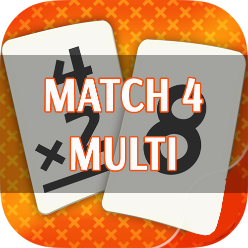
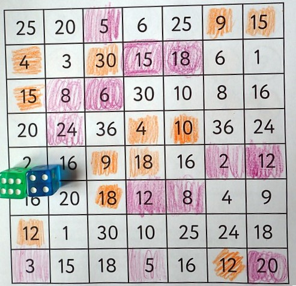
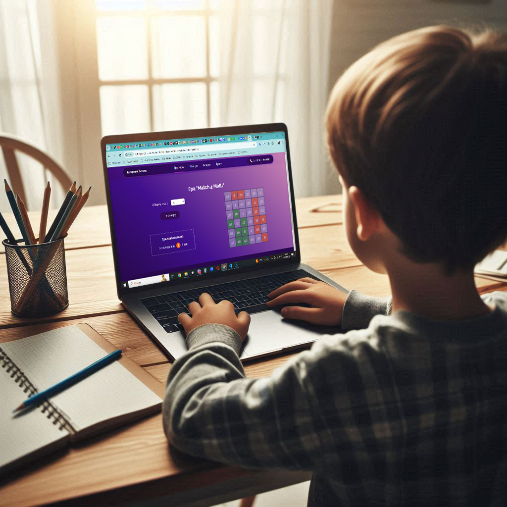
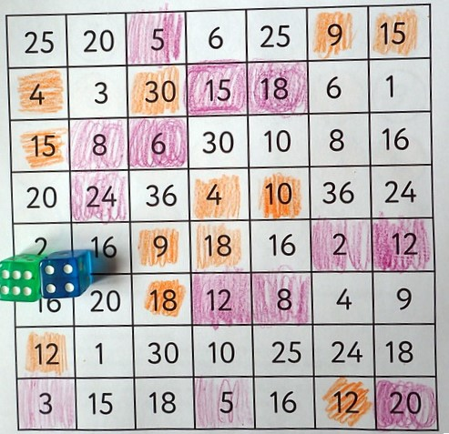
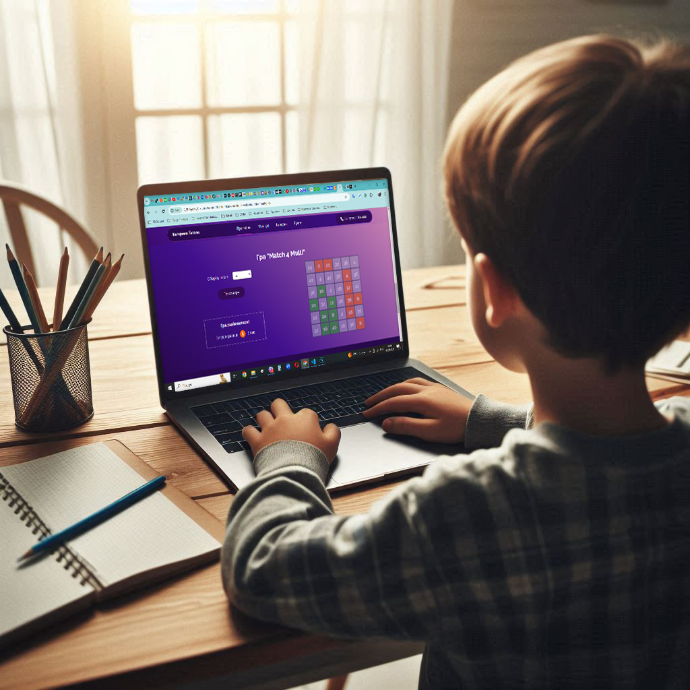

Про мене
Вітаю! Мене звуть Катерина і я навчаюся на курсі Front-end розробки від Ciklum і Prometheus. Це сторінка навчального проекту, який спрямований на вивчення HTML, CSS та JS. В ньому представлена розробка міні-гри "Match 4 Multi". Я обрала інтерпритацію гри "Match 4", бо для мене важливо, щоб будь-який проєкт, навчальний чи реальний, мав практичне використання, це збільшує мотивацію його виконання)). Мій старший син зараз навчається в 2му класі та вивчає таблицю множення. І ця гра стане йому в нагоді. З нею він зможе в ігровій формі закріплювати навички множення. Бо, як відомо, у грі діти навчаются швидко і з задоволенням.
Гра
"Match 4 Multi"
Гра "Match 4 Multi" дозволяє весело, цікаво і з користю провести час, як дітям так і дорослим. Гра "Match 4" схожа на класичні хрестики-нулики, але в ній потрібно зібрати чотири комірки одного кольору по вертикалі, горизонталі або діагоналі. У назві додатково присутньо слово Multi, бо це математична інтерпритація звичайної гри Match 4. В ній можна обирати лише ті комірки, які є результатом множення двох чисел. Перше число обирається на початку гри, а друге число генерується заново на кожному ході гравців. Ця гра розроблена для полегшення вивчення таблиці множення в ігровій формі для школярів молодших класів, а також для розвинення в них логічного та аналітичного мислення. Гра розрахована на двох гравців, які будуть змагатися, хто першим складе ряд власного кольору.
Правила гри. На початку гри обирається перше незмінне число. Далі натискається кнопка "Почати гру". На екрані кольором підсвічується, який гравець зараз може зробити хід. Активний гравець має порахувати результат множення двох чисел, знайти відповідну комірку з результатом і клікнути на неї. Якщо відповідь правильна, комірка зафарбується у колір активного ігрока. Якщо відповідь неправильна, комірка тимчасово підсвітиться червоним. В цьому випадку гравцю треба ще раз подумати над результатом та вибрати іншу комірку з правильною відповіддю. Далі хід переходить до наступного гравця. Перемагає той, хто першим зможе зібрати горизонтальний, вертикальний або діагональний рядок свого кольору з чьотирьох комірок.
Галерея гри
 


